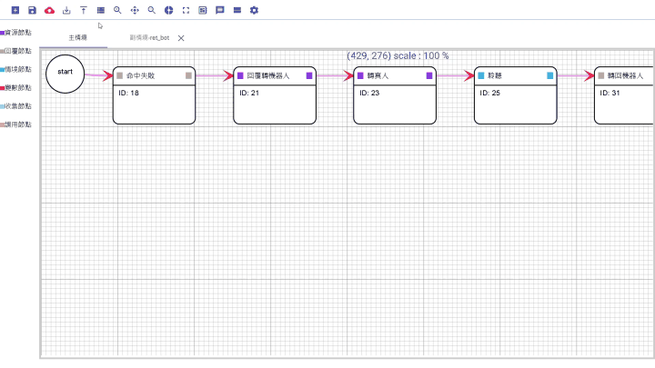
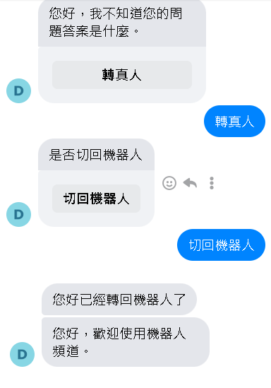
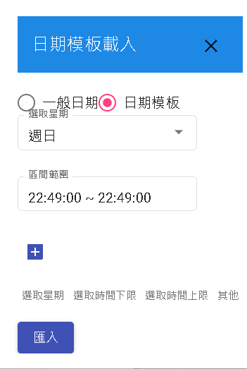
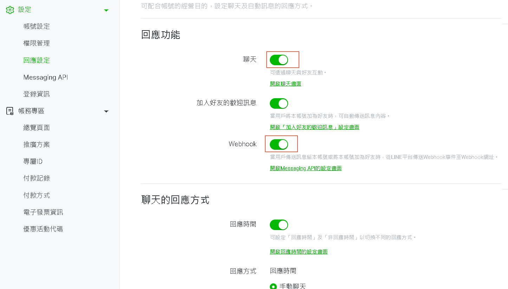
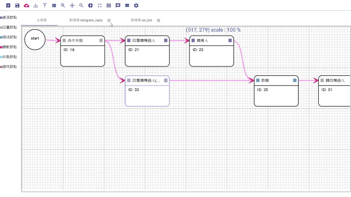
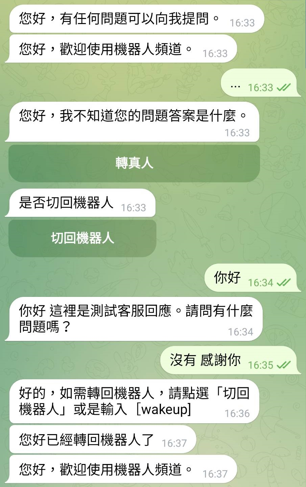
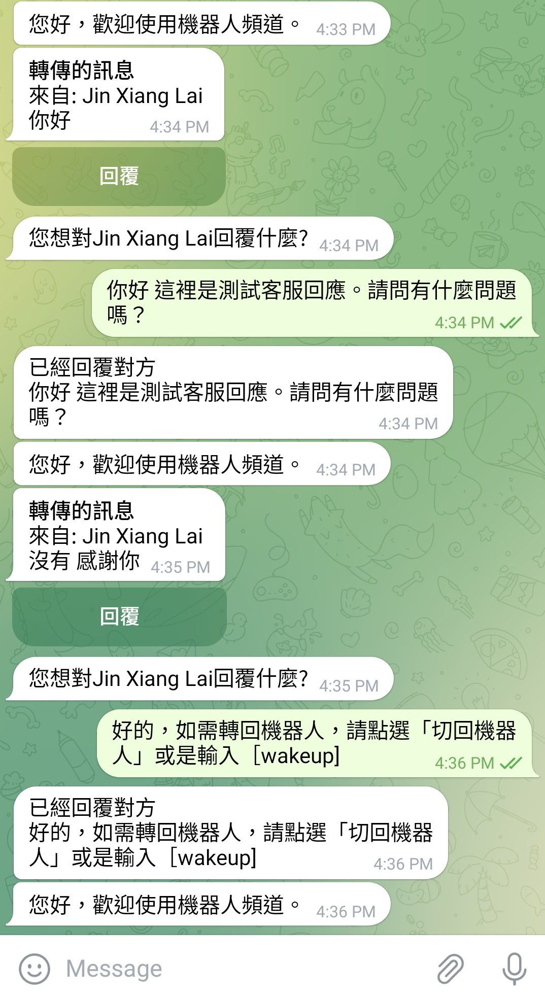

真人客服-讓機器人躍升為有情有義的對話夥伴
如何在 DMflow 中將機器人轉換成真人客服。透過 DMflow 平台，瞭解如何結合自動化機器人與真人客服功能，提供更加人性化和互動性強的對話體驗。
使用Messenger渠道
首先我們先在config中建立messengerToken。再來在變數新增id、success。
變數管理
| 變數名稱 | 限制 |
|---|---|
| success | bool |
| id | string |
資源創建
name: pass_to_inbox(將控制權轉為Inbox)
https://graph.facebook.com/v16.0/me/pass_thread_control?access_token=${#config.messengerToken}
Request-Type : POST Content-Type : application/json(JSON)
Parameter
| 鍵 | JSON 路徑 |
|---|---|
| id | recipient['id'] |
{
"recipient": {
"id": ""
},
"target_app_id": "263902037430900"
}
Return
| JSON 路徑 | 鍵 |
|---|---|
| success | success |
{
"success": true,
"message": "Thread control successfully passed to the target app."
}
name: take_thread(將控制權拿回來)
https://graph.facebook.com/v16.0/me/take_thread_control?access_token=${#messengerToken}
Request-Type : POST Content-Type : application/json(JSON)
Parameter
| 鍵 | JSON 路徑 |
|---|---|
| id | recipient['id'] |
{
"recipient": {
"id": ""
}
}
Return
| JSON 路徑 | 鍵 |
|---|---|
| success | success |
name: reply(回覆機器人)
https://graph.facebook.com/v16.0/me/messages?access_token=${#config.messengerToken}
Request-Type : POST Content-Type : application/json(JSON)
Parameter
| 鍵 | JSON 路徑 |
|---|---|
| id | recipient['id'] |
{
"messaging_type": "RESPONSE",
"recipient": {
"id": ""
},
"message": {
"attachment": {
"type": "template",
"payload": {
"template_type": "button",
"text": "是否切回機器人",
"buttons": [
{
"type": "postback",
"title": "切回機器人",
"payload": "{\"type\":\"text\",\"payload\":{\"query\":\"[wakeup]\",\"type\":\"text\"}}"
}
]
}
}
}
}


其中判斷可以再加上rangeTime去判斷工作時間，也可以外接API做客服佇列、是否在線上等等。

使用API
/_api/v1/bot/chat
使用chat API可以使當前使用者進入聆聽模式。此時機器人不會回覆任何話術。
其他渠道
LINE
可直接在LINE OA設定。不過記得用戶需要再"情境節點-聆聽"才能讓用戶不觸發機器人自動回話。

Telegram
首先我們先在config中建立telegramToken。再來在變數新增id、query、callback。
變數管理
| 變數名稱 | 限制 |
|---|---|
| callback | string |
| query | string |
| id | string |
資源創建
name: telegram_sendMessage(用於回覆客服用戶的問題)
https://api.telegram.org/bot${#config.telegramToken}/sendMessage
Request-Type : POST Content-Type : application/json(JSON)
Parameter
| 鍵 | JSON 路徑 |
|---|---|
| query | text |
| id | chat_id |
{
"text": "",
"chat_id": ""
}
name: telegram_forward(用於監聽用戶對話)
https://api.telegram.org/bot${#config.telegramToken}/sendMessage
Request-Type : POST Content-Type : application/json(JSON)
Parameter
| 鍵 | JSON 路徑 |
|---|---|
| query | text |
| id | chat_id |
| callback | reply_markup['inline_keyboard'][0][0]['callback_data'] |
{
"text": "",
"chat_id": "6092427840",
"parse_mode": "Markdown",
"reply_markup": {
"inline_keyboard": [
[
{
"text": "回覆",
"callback_data": ""
}
]
]
}
}
記憶模板
單一會話儲存
- 新增replyUserId(回覆使用者ID)
在依以下機器人動態圖作範例，即可做出簡單的Telegram真人客服。

以下是實際畫面。


就可以做出簡單的真人問答系統。當然，可進一步搭配API做出查詢訊息、查找FAQ等等。
聯絡資訊
DMflow.chat 官網: DMflow.chat (於2024-05-18更改網域至DMflow.chat，此文檔將不再維護請至DMflow.chat文檔查看新版文檔)